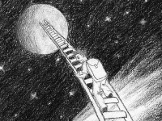
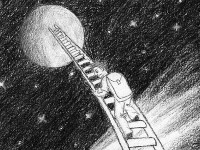

Welcome to Muhammad Moneib's website.
Born in the Orwellian year of 1984, Moneib has developed early on a facination with technology and arts. Coming into age amid the birth of the Internet, the digital transformation of nearly everything, and the addition of an extra depth in animation, being an active part of this revolution was his dream.
Nonetheless, growing in Cairo, Egypt, not far away from the Great Pyramids of Giza, his love of the modern technology was challenged by an equal love of antiquity and its vintage viewpoint. The glory of ancient Egypt, and specially in comparison to the lackluster and decay of modern Egypt, left the greatest mark on his soul, one that follows him wherever he goes as an allegory to the situation of the whole modern world in general.
Hence now, older and wiser, he knows very well that technology is more of a symptom of a disease than an answer to the plight of humanity. That the constant desire for growth is an intrinsic human condition, one that literally kills us in many ways, as we indvidually grow to old age, and as we are growing now to unsustainability as a species.
Yet, as pragmatic as he desires to be, Moneib knows that the only way out is in. That is, for humanity to quit being addicted to growth, it can use the tools that growth provide through harnessing the power of the collective to reach a common myth, one that would help humanity reach a consensus.
It is within the yin and yang of the collective and the indiviual, Moneib is convinced, where the solution lies. Hence, he tries to maintain the balance of duties to his society and himself: for the former through being and informed citizen, for the latter through forgetting such information.
His ideology is simple: contradictions are complementary and, so, the raison d'etre lies in the belief that one is nothing.
Thus, Moneib has built a rigorous mechanism of approaching the world through employing the good old Trial and Error way of development. It wouldn't be surprising then if I tell you that he enjoys the process more than the conclusions and the journey more than the destination. For that purpose, the inefficiencies of this mechanism become its strongest point, just like a Rube Goldberg machine.
For him, freedom lies in the uncertainty and creativity lies in horizontal exploration rather than vertical specialization. Combined together, both beliefs lead Moneib to new frontiers within the vast terrain of his soul.
Hunting for the treasure within, he keeps digging here and about. Yet, being a non-believer in happy, as well as unhappy endings, Moneib knows very well that the journey will be over one day, but his hunt will continue forever in the manner of Atlas.
Until then, he settles for being through imagination. He engineers a digital abstraction of the analog, he draws a moment that has never been, he writes what can't be told, and he photographs because time travelling isn't possible.
In Moneib's fantasy, fantasy is reality. It's, perhaps, the fourth Orwellian slogan that wasn't included in 1984. Did I mention that Moneib was born in 1984?
If you have made it that far through reading every word, then thanks for your time. I believe my freewriting exercise for today is over.
Muhammad Moneib


 
